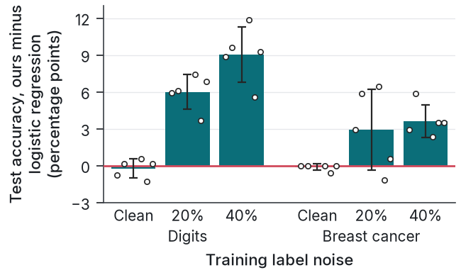
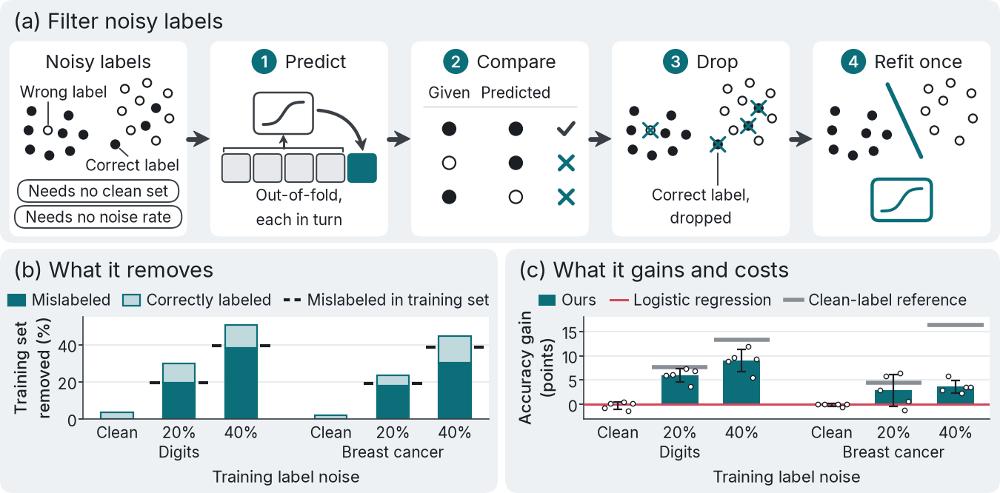

Drop What the Model Disagrees With: Out-of-Fold Filtering for Label Noise
Storyline
A linear classifier trained on wrong labels loses accuracy. A known remedy, classification filtering, drops training samples that held-out predictions contradict. The paper claims no new method; it measures what one single-learner out-of-fold filter (logistic regression for both the check and the refit) removes, recovers and costs on two small datasets with clean and symmetrically noisy labels, checking every drop against the injected flips. Under noise most drops are mislabeled and the kept set holds a far smaller mislabeled share than the training set, although correct samples are discarded and removal overshoots the flipped share. The refit model has a higher mean accuracy than logistic regression with the same settings in every noisy setting (not significant on breast cancer at the lower rate) but stays below the clean-label reference in all of them, with little recovery on breast cancer at the higher rate. With clean labels it removes few samples and costs little. Revised after review round 0.
Stages
| stage | after | status | sessions | output tokens | minutes | history | notes |
|---|---|---|---|---|---|---|---|
| scout | done | 1 | 14,560 | 1.6 | 22038ad | ||
| experiments | scout | done | 1 | 11,141 | 1.1 | 9887a0b | |
| evidence | scout | done | 1 | 23,761 | 2.3 | b5d94f5 | |
| stats | evidence | done | 1 | 67,992 | 6.8 | a507d94 | |
| venueread | scout | done | 6 | 42,477 | 2.5 | 2467616 | |
| venuestyle | venueread | done | 2 | 100,576 | 10.9 | afe7382 | 1 fix round(s) |
| search | scout | done | 1 | 13,401 | 11.4 | fe7fc4f | |
| read | search | done | 5 | 87,633 | 2.4 | 314ff94 | |
| ledger | stats, experiments | done | 1 | 67,577 | 6.9 | 23156aa | |
| story | ledger, read, venuestyle | done | 4 | 108,584 | 4.5 | 1cfda95 | |
| outline | story | done | 1 | 27,136 | 3.9 | 30ef479 | |
| notation | outline | done | 1 | 25,233 | 2.8 | e8902cd | |
| library | outline, read | done | 1 | 23,246 | 5.4 | 6d20e77 | |
| figplan | outline | done | 1 | 61,914 | 6.5 | be5e49b | |
| figures | figplan | done | 2 | 84,913 | 7.3 | 23c4392 | |
| critique | figures | done | 6 | 128,839 | 9.7 | 1a7cf5d | 2 fix round(s) |
| tables | outline | done | 2 | 64,681 | 4.5 | 093adc4 | |
| draft | notation, library, critique, tables | done | 5 | 102,297 | 3.0 | 9f5f664 | |
| frame | draft | done | 8 | 299,927 | 6.4 | 957874a | |
| edit | frame | done | 1 | 66,606 | 7.4 | 29c57d5 | |
| audit | edit | done | 1 | 72,925 | 7.1 | dbecab4 | |
| citecheck | edit | done | 1 | 18,674 | 2.0 | b003d04 | |
| polish | audit, citecheck | done | 9 | 201,606 | 4.3 | 09f6b70 | |
| fit | polish | done | 0 | 0 | 0.1 | 99537dd | |
| review0 | fit | done | 4 | 135,970 | 4.3 | e62645d | mean review 4.5 |
| chair0 | review0 | done | 1 | 37,277 | 4.0 | d0ee600 | |
| revise1 | chair0 | done | 1 | 139,215 | 15.2 | 0613da7 | kept: mean score 4.50 -> 4.50 |
| review1 | revise1 | done | 4 | 145,534 | 4.6 | b6b0029 | mean review 4.5 |
| comply | review1 | done | 0 | 0 | 0.0 | c302a75 | |
| proofread | comply | done | 9 | 117,983 | 2.8 | 1d3a36d | |
| inspect | proofread | done | 9 | 296,742 | 21.9 | a1c5407 | 3 fix round(s) |
| final | inspect | done | 0 | 0 | 0.0 | 7d46264 | |
| package | final | pending | 0 | 0 | 0.0 | e7011f5 |
Numbers
Every number printed in the paper is tagged with a recipe in paper/sources.py and recomputed from the repository's data before the paper is accepted.
| key | value | what it is | files read | printed at |
|---|---|---|---|---|
acc_filter_breast_noise0 | 96.6082 | mean test accuracy (%) of ours (filter) on breast_cancer, clean training labels, mean over seeds 0-4 | experiments/config.json, results/runs.jsonl | table_accuracy.tex:12 |
acc_filter_breast_noise20 | 95.2047 | mean test accuracy (%) of ours (filter) on breast_cancer, 20% symmetric training-label noise, clean test labels, mean over seeds 0-4 | experiments/config.json, results/runs.jsonl | table_accuracy.tex:12 |
acc_filter_breast_noise40 | 83.9766 | mean test accuracy (%) of ours (filter) on breast_cancer, 40% symmetric training-label noise, clean test labels, mean over seeds 0-4 | experiments/config.json, results/runs.jsonl | table_accuracy.tex:12 |
acc_filter_digits_noise0 | 96.5926 | mean test accuracy (%) of out-of-fold filtering + logistic regression (ours) on digits, clean training labels, mean over seeds 0-4 | experiments/config.json, results/runs.jsonl | table_accuracy.tex:12 |
acc_filter_digits_noise20 | 95.1111 | mean test accuracy (%) of ours (filter) on digits, 20% symmetric training-label noise, clean test labels, mean over seeds 0-4 | experiments/config.json, results/runs.jsonl | table_accuracy.tex:12 |
acc_filter_digits_noise40 | 92.6296 | mean test accuracy (%) of ours (filter) on digits, 40% symmetric training-label noise, clean test labels, mean over seeds 0-4 | experiments/config.json, results/runs.jsonl | table_accuracy.tex:12 |
acc_logreg_breast_noise0 | 96.7251 | mean test accuracy (%) of logistic regression on breast_cancer, clean training labels (clean reference), mean over seeds 0-4 | experiments/config.json, results/runs.jsonl | table_accuracy.tex:10 |
acc_logreg_breast_noise20 | 92.2807 | mean test accuracy (%) of logistic regression on breast_cancer, 20% symmetric training-label noise, clean test labels, mean over seeds 0-4 | experiments/config.json, results/runs.jsonl | table_accuracy.tex:10 |
acc_logreg_breast_noise40 | 80.3509 | mean test accuracy (%) of logistic regression on breast_cancer, 40% symmetric training-label noise, clean test labels, mean over seeds 0-4 | experiments/config.json, results/runs.jsonl | table_accuracy.tex:10 |
acc_logreg_digits_noise0 | 96.8148 | mean test accuracy (%) of logistic regression on digits, clean training labels (clean reference), mean over seeds 0-4 | experiments/config.json, results/runs.jsonl | table_accuracy.tex:10 |
acc_logreg_digits_noise20 | 89.1111 | mean test accuracy (%) of logistic regression on digits, 20% symmetric training-label noise, clean test labels, mean over seeds 0-4 | experiments/config.json, results/runs.jsonl | table_accuracy.tex:10 |
acc_logreg_digits_noise40 | 83.5926 | mean test accuracy (%) of logistic regression on digits, 40% symmetric training-label noise, clean test labels, mean over seeds 0-4 | experiments/config.json, results/runs.jsonl | table_accuracy.tex:10 |
acc_mlp_breast_noise0 | 96.7251 | mean test accuracy (%) of the MLP on breast_cancer, clean training labels, mean over seeds 0-4 | experiments/config.json, results/runs.jsonl | table_accuracy.tex:11 |
acc_mlp_breast_noise20 | 84.2105 | mean test accuracy (%) of the MLP on breast_cancer, 20% symmetric training-label noise, clean test labels, mean over seeds 0-4 | experiments/config.json, results/runs.jsonl | table_accuracy.tex:11 |
acc_mlp_breast_noise40 | 65.3801 | mean test accuracy (%) of the MLP on breast_cancer, 40% symmetric training-label noise, clean test labels, mean over seeds 0-4 | experiments/config.json, results/runs.jsonl | table_accuracy.tex:11 |
acc_mlp_digits_noise0 | 97.3333 | mean test accuracy (%) of the MLP on digits, clean training labels, mean over seeds 0-4 | experiments/config.json, results/runs.jsonl | table_accuracy.tex:11 |
acc_mlp_digits_noise20 | 82.4074 | mean test accuracy (%) of the MLP on digits, 20% symmetric training-label noise, clean test labels, mean over seeds 0-4 | experiments/config.json, results/runs.jsonl | table_accuracy.tex:11 |
acc_mlp_digits_noise40 | 64.8889 | mean test accuracy (%) of the MLP on digits, 40% symmetric training-label noise, clean test labels, mean over seeds 0-4 | experiments/config.json, results/runs.jsonl | table_accuracy.tex:11 |
correct_dropped_breast_noise20 | 6.85687 | share (%) of correctly labeled training samples that the filter dropped, (n_dropped - n_dropped_noisy) / (n_train - n_noisy), breast_cancer, 20% noise, mean of per-seed ratios over seeds 0-4 | experiments/config.json, results/runs.jsonl | table_drops.tex:16 |
correct_dropped_breast_noise40 | 23.2419 | share (%) of correctly labeled training samples that the filter dropped, (n_dropped - n_dropped_noisy) / (n_train - n_noisy), breast_cancer, 40% noise, mean of per-seed ratios over seeds 0-4 | experiments/config.json, results/runs.jsonl | table_drops.tex:16 |
correct_dropped_digits_noise20 | 13.2351 | share (%) of correctly labeled training samples that the filter dropped, (n_dropped - n_dropped_noisy) / (n_train - n_noisy), digits, 20% noise, mean of per-seed ratios over seeds 0-4 | experiments/config.json, results/runs.jsonl | table_drops.tex:16 |
correct_dropped_digits_noise40 | 19.8945 | share (%) of correctly labeled training samples that the filter dropped, (n_dropped - n_dropped_noisy) / (n_train - n_noisy), digits, 40% noise, mean of per-seed ratios over seeds 0-4 | experiments/config.json, results/runs.jsonl | table_drops.tex:16 |
drop_fraction_breast_noise0 | 1.8593 | share (%) of the training set dropped by the filter, breast_cancer, clean labels (every drop is a correctly labeled sample), mean over seeds 0-4 | experiments/config.json, results/runs.jsonl | 05_drops.tex:6 |
drop_fraction_breast_noise20 | 23.3166 | share (%) of the training set dropped by the filter, breast_cancer, 20% noise, mean over seeds 0-4 | experiments/config.json, results/runs.jsonl | table_drops.tex:13 |
drop_fraction_breast_noise40 | 44.5226 | share (%) of the training set dropped by the filter, breast_cancer, 40% noise, mean over seeds 0-4 | experiments/config.json, results/runs.jsonl | table_drops.tex:13 |
drop_fraction_digits_noise0 | 3.46858 | share (%) of the training set dropped by the filter, digits, clean labels (every drop is a correctly labeled sample), mean over seeds 0-4 | experiments/config.json, results/runs.jsonl | 05_drops.tex:6 |
drop_fraction_digits_noise20 | 30.0239 | share (%) of the training set dropped by the filter, digits, 20% noise, mean over seeds 0-4 | experiments/config.json, results/runs.jsonl | table_drops.tex:13 |
drop_fraction_digits_noise40 | 50.4535 | share (%) of the training set dropped by the filter, digits, 40% noise, mean over seeds 0-4 | experiments/config.json, results/runs.jsonl | table_drops.tex:13 |
drop_precision_breast_noise20 | 76.353 | share (%) of dropped training samples that were truly mislabeled, breast_cancer, 20% noise, mean of per-seed ratios over seeds 0-4 | experiments/config.json, results/runs.jsonl | table_drops.tex:14 |
drop_precision_breast_noise40 | 68.2508 | share (%) of dropped training samples that were truly mislabeled, breast_cancer, 40% noise, mean of per-seed ratios over seeds 0-4 | experiments/config.json, results/runs.jsonl | table_drops.tex:14 |
drop_precision_digits_noise20 | 64.6139 | share (%) of dropped training samples that were truly mislabeled, digits, 20% noise, mean of per-seed ratios over seeds 0-4 | experiments/config.json, results/runs.jsonl | table_drops.tex:14 |
drop_precision_digits_noise40 | 76.1051 | share (%) of dropped training samples that were truly mislabeled, digits, 40% noise, mean of per-seed ratios over seeds 0-4 | experiments/config.json, results/runs.jsonl | table_drops.tex:14 |
drop_precision_max | 81.25 | highest per-run share (%) of dropped samples that were truly mislabeled, over all noisy runs (both datasets, 20% and 40% noise, seeds 0-4) | experiments/config.json, results/runs.jsonl | 05_drops.tex:9 |
drop_precision_min | 61.0687 | lowest per-run share (%) of dropped samples that were truly mislabeled, over all noisy runs (both datasets, 20% and 40% noise, seeds 0-4) | experiments/config.json, results/runs.jsonl | 05_drops.tex:9 |
drop_recall_breast_noise20 | 92.5165 | share (%) of mislabeled training samples that the filter dropped, breast_cancer, 20% noise, mean of per-seed ratios over seeds 0-4 | experiments/config.json, results/runs.jsonl | table_drops.tex:15 |
drop_recall_breast_noise40 | 78.9076 | share (%) of mislabeled training samples that the filter dropped, breast_cancer, 40% noise, mean of per-seed ratios over seeds 0-4 | experiments/config.json, results/runs.jsonl | table_drops.tex:15 |
drop_recall_digits_noise20 | 98.4639 | share (%) of mislabeled training samples that the filter dropped, digits, 20% noise, mean of per-seed ratios over seeds 0-4 | experiments/config.json, results/runs.jsonl | table_drops.tex:15 |
drop_recall_digits_noise40 | 97.5422 | share (%) of mislabeled training samples that the filter dropped, digits, 40% noise, mean of per-seed ratios over seeds 0-4 | experiments/config.json, results/runs.jsonl | table_drops.tex:15 |
filter_folds | 5 | number of cross-validation folds K used by the filter | experiments/config.json | 04_setup.tex:7 |
flipped_low_seeds_max_breast_noise40 | 42.2111 | largest flipped share (%) of the training set among the two seeds where ours and logistic regression are least accurate, breast_cancer, 40% noise | experiments/config.json, results/runs.jsonl | 06_accuracy.tex:15 |
flipped_low_seeds_min_breast_noise40 | 41.7085 | smallest flipped share (%) of the training set among the two seeds where ours and logistic regression are least accurate, breast_cancer, 40% noise | experiments/config.json, results/runs.jsonl | 06_accuracy.tex:15 |
flipped_other_seeds_max_breast_noise40 | 37.9397 | largest flipped share (%) of the training set among the other three seeds, breast_cancer, 40% noise | experiments/config.json, results/runs.jsonl | 06_accuracy.tex:15 |
flipped_other_seeds_min_breast_noise40 | 35.4271 | smallest flipped share (%) of the training set among the other three seeds, breast_cancer, 40% noise | experiments/config.json, results/runs.jsonl | 06_accuracy.tex:15 |
gain_seed_max_digits_noise0 | 0.555556 | largest per-seed difference ours minus logistic regression test accuracy (points), digits, clean labels, seeds 0-4 | experiments/config.json, results/runs.jsonl | 07_clean.tex:3 |
gain_seed_min_digits_noise0 | -1.2963 | smallest per-seed difference ours minus logistic regression test accuracy (points), digits, clean labels, seeds 0-4 | experiments/config.json, results/runs.jsonl | 07_clean.tex:3 |
kept_noisy_low_seeds_min_breast_noise40 | 18.3962 | smallest mislabeled share (%) of the kept set among the two seeds where ours and logistic regression are least accurate, breast_cancer, 40% noise | experiments/config.json, results/runs.jsonl | 06_accuracy.tex:15 |
kept_noisy_other_seeds_max_breast_noise40 | 12.7753 | largest mislabeled share (%) of the kept set among the other three seeds, breast_cancer, 40% noise | experiments/config.json, results/runs.jsonl | 06_accuracy.tex:15 |
kept_noisy_share_breast_noise20 | 1.83072 | share (%) of the kept set that is mislabeled, (n_noisy - n_dropped_noisy) / (n_train - n_dropped), breast_cancer, 20% noise, mean of per-seed ratios over seeds 0-4 | experiments/config.json, results/runs.jsonl | table_drops.tex:11 |
kept_noisy_share_breast_noise40 | 14.9912 | share (%) of the kept set that is mislabeled, (n_noisy - n_dropped_noisy) / (n_train - n_dropped), breast_cancer, 40% noise, mean of per-seed ratios over seeds 0-4 | experiments/config.json, results/runs.jsonl | table_drops.tex:11 |
kept_noisy_share_digits_noise20 | 0.431891 | share (%) of the kept set that is mislabeled, (n_noisy - n_dropped_noisy) / (n_train - n_dropped), digits, 20% noise, mean of per-seed ratios over seeds 0-4 | experiments/config.json, results/runs.jsonl | table_drops.tex:11 |
kept_noisy_share_digits_noise40 | 1.962 | share (%) of the kept set that is mislabeled, (n_noisy - n_dropped_noisy) / (n_train - n_dropped), digits, 40% noise, mean of per-seed ratios over seeds 0-4 | experiments/config.json, results/runs.jsonl | table_drops.tex:11 |
logreg_c | 1 | inverse regularization strength C of every logistic regression | experiments/config.json | 04_setup.tex:7 |
logreg_max_iter | 5000 | maximum solver iterations of every logistic regression (hard-coded in experiments/run.py) | experiments/run.py | 04_setup.tex:9 |
mlp_hidden | 64 | number of units in the single hidden layer of the MLP | experiments/config.json | 04_setup.tex:9 |
mlp_max_iter | 500 | maximum training iterations of the MLP | experiments/config.json | 04_setup.tex:9 |
n_seeds | 5 | number of seeds per setting (each sets the random split, noise draw, CV folds and MLP initialization) | experiments/config.json | 04_setup.tex:17, fig_teaser.tex:4, table_accuracy.tex:4, table_drops.tex:4 |
n_test_breast | 171 | number of test samples per split on breast_cancer (same for every seed and noise rate) | results/runs.jsonl | 04_setup.tex:3, table_accuracy.tex:4 |
n_test_digits | 540 | number of test samples per split on digits (same for every seed and noise rate) | results/runs.jsonl | 04_setup.tex:3, table_accuracy.tex:4 |
n_train_breast | 398 | number of training samples per split on breast_cancer (same for every seed and noise rate) | results/runs.jsonl | 04_setup.tex:3 |
n_train_digits | 1257 | number of training samples per split on digits (same for every seed and noise rate) | results/runs.jsonl | 04_setup.tex:3 |
noise_rate_high | 40 | higher symmetric training-label noise rate (%), requested flip probability | experiments/config.json | 04_setup.tex:5, table_accuracy.tex:8, table_accuracy.tex:8, table_drops.tex:8, table_drops.tex:8 |
noise_rate_low | 20 | lower non-zero symmetric training-label noise rate (%), requested flip probability | experiments/config.json | 04_setup.tex:5, table_accuracy.tex:8, table_accuracy.tex:8, table_drops.tex:8, table_drops.tex:8 |
noisy_share_breast_noise20 | 19.196 | share (%) of all training samples whose label was flipped, breast_cancer, 20% noise, mean over seeds 0-4 | experiments/config.json, results/runs.jsonl | table_drops.tex:10 |
noisy_share_breast_noise40 | 38.593 | share (%) of all training samples whose label was flipped, breast_cancer, 40% noise, mean over seeds 0-4 | experiments/config.json, results/runs.jsonl | table_drops.tex:10 |
noisy_share_digits_noise20 | 19.6977 | share (%) of all training samples whose label was flipped, digits, 20% noise, mean over seeds 0-4 | experiments/config.json, results/runs.jsonl | table_drops.tex:10 |
noisy_share_digits_noise40 | 39.3636 | share (%) of all training samples whose label was flipped, digits, 40% noise, mean over seeds 0-4 | experiments/config.json, results/runs.jsonl | table_drops.tex:10 |
p_clean_logreg_vs_filter_breast_noise20 | 0.0486302 | p-value, two-sided paired t-test over 5 seeds, clean-label logistic regression vs ours (filter) trained at 20% noise, test accuracy, breast_cancer | experiments/config.json, results/runs.jsonl | 06_accuracy.tex:9 |
p_clean_logreg_vs_filter_digits_noise20 | 0.0529848 | p-value, two-sided paired t-test over 5 seeds, clean-label logistic regression vs ours (filter) trained at 20% noise, test accuracy, digits | experiments/config.json, results/runs.jsonl | 06_accuracy.tex:9 |
p_filter_vs_logreg_breast_noise20 | 0.117176 | p-value, two-sided paired t-test over 5 seeds, ours (filter) vs logistic regression test accuracy, breast_cancer, 20% symmetric training-label noise | experiments/config.json, results/runs.jsonl | 06_accuracy.tex:6 |
recovered_breast_noise20 | 65.7895 | share (%) of logistic-regression accuracy lost to 20% noise that ours wins back on breast_cancer: (mean ours - mean noisy logreg) / (mean clean logreg - mean noisy logreg), means over seeds 0-4 | experiments/config.json, results/runs.jsonl | table_drops.tex:18 |
recovered_breast_noise40 | 22.1429 | share (%) of logistic-regression accuracy lost to 40% noise that ours wins back on breast_cancer: (mean ours - mean noisy logreg) / (mean clean logreg - mean noisy logreg), means over seeds 0-4 | experiments/config.json, results/runs.jsonl | table_drops.tex:18 |
recovered_digits_noise20 | 77.8846 | share (%) of logistic-regression accuracy lost to 20% noise that ours wins back on digits: (mean ours - mean noisy logreg) / (mean clean logreg - mean noisy logreg), means over seeds 0-4 | experiments/config.json, results/runs.jsonl | table_drops.tex:18 |
recovered_digits_noise40 | 68.3473 | share (%) of logistic-regression accuracy lost to 40% noise that ours wins back on digits: (mean ours - mean noisy logreg) / (mean clean logreg - mean noisy logreg), means over seeds 0-4 | experiments/config.json, results/runs.jsonl | table_drops.tex:18 |
recovered_seed_max_breast_noise20 | 100 | largest per-seed share (%) of the logistic-regression noise cost that ours wins back, breast_cancer, 20% noise, seeds 0-4 | experiments/config.json, results/runs.jsonl | 06_accuracy.tex:12 |
recovered_seed_min_breast_noise20 | -66.6667 | smallest per-seed share (%) of the logistic-regression noise cost that ours wins back, breast_cancer, 20% noise, seeds 0-4 | experiments/config.json, results/runs.jsonl | 06_accuracy.tex:12 |
std_filter_breast_noise0 | 0.960917 | sample standard deviation (points) of test accuracy of ours (filter) on breast_cancer, clean training labels, over seeds 0-4 | experiments/config.json, results/runs.jsonl | table_accuracy.tex:12 |
std_filter_breast_noise20 | 0.76248 | sample standard deviation (points) of test accuracy of ours (filter) on breast_cancer, 20% training-label noise, over seeds 0-4 | experiments/config.json, results/runs.jsonl | table_accuracy.tex:12 |
std_filter_breast_noise40 | 8.95138 | sample standard deviation (points) of test accuracy of ours (filter) on breast_cancer, 40% training-label noise, over seeds 0-4 | experiments/config.json, results/runs.jsonl | table_accuracy.tex:12 |
std_filter_digits_noise0 | 0.360992 | sample standard deviation (points) of test accuracy of ours (filter) on digits, clean training labels, over seeds 0-4 | experiments/config.json, results/runs.jsonl | table_accuracy.tex:12 |
std_filter_digits_noise20 | 0.874498 | sample standard deviation (points) of test accuracy of ours (filter) on digits, 20% training-label noise, over seeds 0-4 | experiments/config.json, results/runs.jsonl | table_accuracy.tex:12 |
std_filter_digits_noise40 | 1.59517 | sample standard deviation (points) of test accuracy of ours (filter) on digits, 40% training-label noise, over seeds 0-4 | experiments/config.json, results/runs.jsonl | table_accuracy.tex:12 |
std_logreg_breast_noise0 | 1.21266 | sample standard deviation (points) of test accuracy of logistic regression on breast_cancer, clean training labels, over seeds 0-4 | experiments/config.json, results/runs.jsonl | table_accuracy.tex:10 |
std_logreg_breast_noise20 | 3.73079 | sample standard deviation (points) of test accuracy of logistic regression on breast_cancer, 20% training-label noise, over seeds 0-4 | experiments/config.json, results/runs.jsonl | table_accuracy.tex:10 |
std_logreg_breast_noise40 | 9.38956 | sample standard deviation (points) of test accuracy of logistic regression on breast_cancer, 40% training-label noise, over seeds 0-4 | experiments/config.json, results/runs.jsonl | table_accuracy.tex:10 |
std_logreg_digits_noise0 | 0.821939 | sample standard deviation (points) of test accuracy of logistic regression on digits, clean training labels, over seeds 0-4 | experiments/config.json, results/runs.jsonl | table_accuracy.tex:10 |
std_logreg_digits_noise20 | 0.974644 | sample standard deviation (points) of test accuracy of logistic regression on digits, 20% training-label noise, over seeds 0-4 | experiments/config.json, results/runs.jsonl | table_accuracy.tex:10 |
std_logreg_digits_noise40 | 1.25325 | sample standard deviation (points) of test accuracy of logistic regression on digits, 40% training-label noise, over seeds 0-4 | experiments/config.json, results/runs.jsonl | table_accuracy.tex:10 |
std_mlp_breast_noise0 | 1.21266 | sample standard deviation (points) of test accuracy of the MLP on breast_cancer, clean training labels, over seeds 0-4 | experiments/config.json, results/runs.jsonl | table_accuracy.tex:11 |
std_mlp_breast_noise20 | 3.98777 | sample standard deviation (points) of test accuracy of the MLP on breast_cancer, 20% training-label noise, over seeds 0-4 | experiments/config.json, results/runs.jsonl | table_accuracy.tex:11 |
std_mlp_breast_noise40 | 5.42947 | sample standard deviation (points) of test accuracy of the MLP on breast_cancer, 40% training-label noise, over seeds 0-4 | experiments/config.json, results/runs.jsonl | table_accuracy.tex:11 |
std_mlp_digits_noise0 | 0.549348 | sample standard deviation (points) of test accuracy of the MLP on digits, clean training labels, over seeds 0-4 | experiments/config.json, results/runs.jsonl | table_accuracy.tex:11 |
std_mlp_digits_noise20 | 1.63551 | sample standard deviation (points) of test accuracy of the MLP on digits, 20% training-label noise, over seeds 0-4 | experiments/config.json, results/runs.jsonl | table_accuracy.tex:11 |
std_mlp_digits_noise40 | 3.11695 | sample standard deviation (points) of test accuracy of the MLP on digits, 40% training-label noise, over seeds 0-4 | experiments/config.json, results/runs.jsonl | table_accuracy.tex:11 |
test_fraction | 30 | share (%) of each dataset held out as the stratified test set | experiments/config.json | 04_setup.tex:5 |
acc_filter_breast_noise0_seed0 | 95.9064 | test accuracy (%) of ours (filter), breast_cancer, clean labels, seed 0 | experiments/config.json, results/runs.jsonl | not printed |
acc_filter_breast_noise0_seed1 | 95.9064 | test accuracy (%) of ours (filter), breast_cancer, clean labels, seed 1 | experiments/config.json, results/runs.jsonl | not printed |
acc_filter_breast_noise0_seed2 | 96.4912 | test accuracy (%) of ours (filter), breast_cancer, clean labels, seed 2 | experiments/config.json, results/runs.jsonl | not printed |
acc_filter_breast_noise0_seed3 | 98.2456 | test accuracy (%) of ours (filter), breast_cancer, clean labels, seed 3 | experiments/config.json, results/runs.jsonl | not printed |
acc_filter_breast_noise0_seed4 | 96.4912 | test accuracy (%) of ours (filter), breast_cancer, clean labels, seed 4 | experiments/config.json, results/runs.jsonl | not printed |
acc_filter_breast_noise20_seed0 | 95.9064 | test accuracy (%) of ours (filter), breast_cancer, 20% noise, seed 0 | experiments/config.json, results/runs.jsonl | not printed |
acc_filter_breast_noise20_seed1 | 95.3216 | test accuracy (%) of ours (filter), breast_cancer, 20% noise, seed 1 | experiments/config.json, results/runs.jsonl | not printed |
acc_filter_breast_noise20_seed2 | 94.152 | test accuracy (%) of ours (filter), breast_cancer, 20% noise, seed 2 | experiments/config.json, results/runs.jsonl | not printed |
acc_filter_breast_noise20_seed3 | 95.9064 | test accuracy (%) of ours (filter), breast_cancer, 20% noise, seed 3 | experiments/config.json, results/runs.jsonl | not printed |
acc_filter_breast_noise20_seed4 | 94.7368 | test accuracy (%) of ours (filter), breast_cancer, 20% noise, seed 4 | experiments/config.json, results/runs.jsonl | not printed |
acc_filter_breast_noise40_seed0 | 89.4737 | test accuracy (%) of ours (filter), breast_cancer, 40% noise, seed 0 | experiments/config.json, results/runs.jsonl | not printed |
acc_filter_breast_noise40_seed1 | 74.8538 | test accuracy (%) of ours (filter), breast_cancer, 40% noise, seed 1 | experiments/config.json, results/runs.jsonl | not printed |
acc_filter_breast_noise40_seed2 | 73.6842 | test accuracy (%) of ours (filter), breast_cancer, 40% noise, seed 2 | experiments/config.json, results/runs.jsonl | not printed |
acc_filter_breast_noise40_seed3 | 92.3977 | test accuracy (%) of ours (filter), breast_cancer, 40% noise, seed 3 | experiments/config.json, results/runs.jsonl | not printed |
acc_filter_breast_noise40_seed4 | 89.4737 | test accuracy (%) of ours (filter), breast_cancer, 40% noise, seed 4 | experiments/config.json, results/runs.jsonl | not printed |
acc_filter_digits_noise0_seed0 | 96.4815 | test accuracy (%) of ours (filter), digits, clean labels, seed 0 | experiments/config.json, results/runs.jsonl | not printed |
acc_filter_digits_noise0_seed1 | 96.8519 | test accuracy (%) of ours (filter), digits, clean labels, seed 1 | experiments/config.json, results/runs.jsonl | not printed |
acc_filter_digits_noise0_seed2 | 96.1111 | test accuracy (%) of ours (filter), digits, clean labels, seed 2 | experiments/config.json, results/runs.jsonl | not printed |
acc_filter_digits_noise0_seed3 | 96.4815 | test accuracy (%) of ours (filter), digits, clean labels, seed 3 | experiments/config.json, results/runs.jsonl | not printed |
acc_filter_digits_noise0_seed4 | 97.037 | test accuracy (%) of ours (filter), digits, clean labels, seed 4 | experiments/config.json, results/runs.jsonl | not printed |
acc_filter_digits_noise20_seed0 | 95 | test accuracy (%) of ours (filter), digits, 20% noise, seed 0 | experiments/config.json, results/runs.jsonl | not printed |
acc_filter_digits_noise20_seed1 | 94.8148 | test accuracy (%) of ours (filter), digits, 20% noise, seed 1 | experiments/config.json, results/runs.jsonl | not printed |
acc_filter_digits_noise20_seed2 | 95.1852 | test accuracy (%) of ours (filter), digits, 20% noise, seed 2 | experiments/config.json, results/runs.jsonl | not printed |
acc_filter_digits_noise20_seed3 | 94.0741 | test accuracy (%) of ours (filter), digits, 20% noise, seed 3 | experiments/config.json, results/runs.jsonl | not printed |
acc_filter_digits_noise20_seed4 | 96.4815 | test accuracy (%) of ours (filter), digits, 20% noise, seed 4 | experiments/config.json, results/runs.jsonl | not printed |
acc_filter_digits_noise40_seed0 | 92.7778 | test accuracy (%) of ours (filter), digits, 40% noise, seed 0 | experiments/config.json, results/runs.jsonl | not printed |
acc_filter_digits_noise40_seed1 | 91.4815 | test accuracy (%) of ours (filter), digits, 40% noise, seed 1 | experiments/config.json, results/runs.jsonl | not printed |
acc_filter_digits_noise40_seed2 | 94.8148 | test accuracy (%) of ours (filter), digits, 40% noise, seed 2 | experiments/config.json, results/runs.jsonl | not printed |
acc_filter_digits_noise40_seed3 | 90.7407 | test accuracy (%) of ours (filter), digits, 40% noise, seed 3 | experiments/config.json, results/runs.jsonl | not printed |
acc_filter_digits_noise40_seed4 | 93.3333 | test accuracy (%) of ours (filter), digits, 40% noise, seed 4 | experiments/config.json, results/runs.jsonl | not printed |
acc_logreg_breast_noise0_seed0 | 95.9064 | test accuracy (%) of logistic regression, breast_cancer, clean labels, seed 0 | experiments/config.json, results/runs.jsonl | not printed |
acc_logreg_breast_noise0_seed1 | 95.9064 | test accuracy (%) of logistic regression, breast_cancer, clean labels, seed 1 | experiments/config.json, results/runs.jsonl | not printed |
acc_logreg_breast_noise0_seed2 | 96.4912 | test accuracy (%) of logistic regression, breast_cancer, clean labels, seed 2 | experiments/config.json, results/runs.jsonl | not printed |
acc_logreg_breast_noise0_seed3 | 98.8304 | test accuracy (%) of logistic regression, breast_cancer, clean labels, seed 3 | experiments/config.json, results/runs.jsonl | not printed |
acc_logreg_breast_noise0_seed4 | 96.4912 | test accuracy (%) of logistic regression, breast_cancer, clean labels, seed 4 | experiments/config.json, results/runs.jsonl | not printed |
acc_logreg_breast_noise20_seed0 | 92.9825 | test accuracy (%) of logistic regression, breast_cancer, 20% noise, seed 0 | experiments/config.json, results/runs.jsonl | not printed |
acc_logreg_breast_noise20_seed1 | 89.4737 | test accuracy (%) of logistic regression, breast_cancer, 20% noise, seed 1 | experiments/config.json, results/runs.jsonl | not printed |
acc_logreg_breast_noise20_seed2 | 87.7193 | test accuracy (%) of logistic regression, breast_cancer, 20% noise, seed 2 | experiments/config.json, results/runs.jsonl | not printed |
acc_logreg_breast_noise20_seed3 | 97.076 | test accuracy (%) of logistic regression, breast_cancer, 20% noise, seed 3 | experiments/config.json, results/runs.jsonl | not printed |
acc_logreg_breast_noise20_seed4 | 94.152 | test accuracy (%) of logistic regression, breast_cancer, 20% noise, seed 4 | experiments/config.json, results/runs.jsonl | not printed |
acc_logreg_breast_noise40_seed0 | 86.5497 | test accuracy (%) of logistic regression, breast_cancer, 40% noise, seed 0 | experiments/config.json, results/runs.jsonl | not printed |
acc_logreg_breast_noise40_seed1 | 69.0058 | test accuracy (%) of logistic regression, breast_cancer, 40% noise, seed 1 | experiments/config.json, results/runs.jsonl | not printed |
acc_logreg_breast_noise40_seed2 | 71.345 | test accuracy (%) of logistic regression, breast_cancer, 40% noise, seed 2 | experiments/config.json, results/runs.jsonl | not printed |
acc_logreg_breast_noise40_seed3 | 88.8889 | test accuracy (%) of logistic regression, breast_cancer, 40% noise, seed 3 | experiments/config.json, results/runs.jsonl | not printed |
acc_logreg_breast_noise40_seed4 | 85.9649 | test accuracy (%) of logistic regression, breast_cancer, 40% noise, seed 4 | experiments/config.json, results/runs.jsonl | not printed |
acc_logreg_digits_noise0_seed0 | 97.2222 | test accuracy (%) of logistic regression, digits, clean labels, seed 0 | experiments/config.json, results/runs.jsonl | not printed |
acc_logreg_digits_noise0_seed1 | 96.6667 | test accuracy (%) of logistic regression, digits, clean labels, seed 1 | experiments/config.json, results/runs.jsonl | not printed |
acc_logreg_digits_noise0_seed2 | 95.5556 | test accuracy (%) of logistic regression, digits, clean labels, seed 2 | experiments/config.json, results/runs.jsonl | not printed |
acc_logreg_digits_noise0_seed3 | 97.7778 | test accuracy (%) of logistic regression, digits, clean labels, seed 3 | experiments/config.json, results/runs.jsonl | not printed |
acc_logreg_digits_noise0_seed4 | 96.8519 | test accuracy (%) of logistic regression, digits, clean labels, seed 4 | experiments/config.json, results/runs.jsonl | not printed |
acc_logreg_digits_noise20_seed0 | 89.0741 | test accuracy (%) of logistic regression, digits, 20% noise, seed 0 | experiments/config.json, results/runs.jsonl | not printed |
acc_logreg_digits_noise20_seed1 | 88.7037 | test accuracy (%) of logistic regression, digits, 20% noise, seed 1 | experiments/config.json, results/runs.jsonl | not printed |
acc_logreg_digits_noise20_seed2 | 87.7778 | test accuracy (%) of logistic regression, digits, 20% noise, seed 2 | experiments/config.json, results/runs.jsonl | not printed |
acc_logreg_digits_noise20_seed3 | 90.3704 | test accuracy (%) of logistic regression, digits, 20% noise, seed 3 | experiments/config.json, results/runs.jsonl | not printed |
acc_logreg_digits_noise20_seed4 | 89.6296 | test accuracy (%) of logistic regression, digits, 20% noise, seed 4 | experiments/config.json, results/runs.jsonl | not printed |
acc_logreg_digits_noise40_seed0 | 83.8889 | test accuracy (%) of logistic regression, digits, 40% noise, seed 0 | experiments/config.json, results/runs.jsonl | not printed |
acc_logreg_digits_noise40_seed1 | 81.8519 | test accuracy (%) of logistic regression, digits, 40% noise, seed 1 | experiments/config.json, results/runs.jsonl | not printed |
acc_logreg_digits_noise40_seed2 | 82.963 | test accuracy (%) of logistic regression, digits, 40% noise, seed 2 | experiments/config.json, results/runs.jsonl | not printed |
acc_logreg_digits_noise40_seed3 | 85.1852 | test accuracy (%) of logistic regression, digits, 40% noise, seed 3 | experiments/config.json, results/runs.jsonl | not printed |
acc_logreg_digits_noise40_seed4 | 84.0741 | test accuracy (%) of logistic regression, digits, 40% noise, seed 4 | experiments/config.json, results/runs.jsonl | not printed |
ci95hi_drop_precision_vs_half_breast_noise20 | 29.0789 | upper end of the 95% bootstrap interval of (share of dropped samples truly mislabeled minus 50%), in points, over 5 seeds, breast_cancer, 20% noise | experiments/config.json, results/runs.jsonl | not printed |
ci95hi_drop_precision_vs_half_breast_noise40 | 21.2415 | upper end of the 95% bootstrap interval of (share of dropped samples truly mislabeled minus 50%), in points, over 5 seeds, breast_cancer, 40% noise | experiments/config.json, results/runs.jsonl | not printed |
ci95hi_drop_precision_vs_half_digits_noise20 | 16.3193 | upper end of the 95% bootstrap interval of (share of dropped samples truly mislabeled minus 50%), in points, over 5 seeds, digits, 20% noise | experiments/config.json, results/runs.jsonl | not printed |
ci95hi_drop_precision_vs_half_digits_noise40 | 26.76 | upper end of the 95% bootstrap interval of (share of dropped samples truly mislabeled minus 50%), in points, over 5 seeds, digits, 40% noise | experiments/config.json, results/runs.jsonl | not printed |
ci95hi_filter_vs_halfway_breast_noise20 | 2.16374 | upper end of the 95% bootstrap interval of ours minus the half-recovery accuracy (points, positive = more than half won back), paired over 5 seeds, breast_cancer, 20% noise | experiments/config.json, results/runs.jsonl | not printed |
ci95hi_filter_vs_halfway_breast_noise40 | -1.63743 | upper end of the 95% bootstrap interval of ours minus the half-recovery accuracy (points, positive = more than half won back), paired over 5 seeds, breast_cancer, 40% noise | experiments/config.json, results/runs.jsonl | not printed |
ci95hi_filter_vs_halfway_digits_noise20 | 3.12963 | upper end of the 95% bootstrap interval of ours minus the half-recovery accuracy (points, positive = more than half won back), paired over 5 seeds, digits, 20% noise | experiments/config.json, results/runs.jsonl | not printed |
ci95hi_filter_vs_halfway_digits_noise40 | 4.22222 | upper end of the 95% bootstrap interval of ours minus the half-recovery accuracy (points, positive = more than half won back), paired over 5 seeds, digits, 40% noise | experiments/config.json, results/runs.jsonl | not printed |
ci95hi_filter_vs_logreg_breast_noise0 | 0 | upper end of the 95% bootstrap interval of ours (filter) minus logistic regression test accuracy (points, negative = ours lower), paired over 5 seeds, breast_cancer, clean labels | experiments/config.json, results/runs.jsonl | not printed |
ci95hi_filter_vs_logreg_breast_noise20 | 5.49708 | upper end of the 95% bootstrap interval of ours (filter) minus logistic regression test accuracy (points), paired over 5 seeds, breast_cancer, 20% noise | experiments/config.json, results/runs.jsonl | not printed |
ci95hi_filter_vs_logreg_breast_noise40 | 4.79532 | upper end of the 95% bootstrap interval of ours (filter) minus logistic regression test accuracy (points), paired over 5 seeds, breast_cancer, 40% noise | experiments/config.json, results/runs.jsonl | not printed |
ci95hi_filter_vs_logreg_digits_noise0 | 0.333333 | upper end of the 95% bootstrap interval of ours (filter) minus logistic regression test accuracy (points, negative = ours lower), paired over 5 seeds, digits, clean labels | experiments/config.json, results/runs.jsonl | not printed |
ci95hi_filter_vs_logreg_digits_noise20 | 6.96296 | upper end of the 95% bootstrap interval of ours (filter) minus logistic regression test accuracy (points), paired over 5 seeds, digits, 20% noise | experiments/config.json, results/runs.jsonl | not printed |
ci95hi_filter_vs_logreg_digits_noise40 | 10.8148 | upper end of the 95% bootstrap interval of ours (filter) minus logistic regression test accuracy (points), paired over 5 seeds, digits, 40% noise | experiments/config.json, results/runs.jsonl | not printed |
ci95hi_filter_vs_mlp_breast_noise20 | 14.0351 | upper end of the 95% bootstrap interval of ours (filter) minus MLP test accuracy (points), paired over 5 seeds, breast_cancer, 20% noise | experiments/config.json, results/runs.jsonl | not printed |
ci95hi_filter_vs_mlp_breast_noise40 | 21.6374 | upper end of the 95% bootstrap interval of ours (filter) minus MLP test accuracy (points), paired over 5 seeds, breast_cancer, 40% noise | experiments/config.json, results/runs.jsonl | not printed |
ci95hi_filter_vs_mlp_digits_noise20 | 14.3704 | upper end of the 95% bootstrap interval of ours (filter) minus MLP test accuracy (points), paired over 5 seeds, digits, 20% noise | experiments/config.json, results/runs.jsonl | not printed |
ci95hi_filter_vs_mlp_digits_noise40 | 31.1481 | upper end of the 95% bootstrap interval of ours (filter) minus MLP test accuracy (points), paired over 5 seeds, digits, 40% noise | experiments/config.json, results/runs.jsonl | not printed |
ci95lo_drop_precision_vs_half_breast_noise20 | 23.8285 | lower end of the 95% bootstrap interval of (share of dropped samples truly mislabeled minus 50%), in points, over 5 seeds, breast_cancer, 20% noise | experiments/config.json, results/runs.jsonl | not printed |
ci95lo_drop_precision_vs_half_breast_noise40 | 15.0954 | lower end of the 95% bootstrap interval of (share of dropped samples truly mislabeled minus 50%), in points, over 5 seeds, breast_cancer, 40% noise | experiments/config.json, results/runs.jsonl | not printed |
ci95lo_drop_precision_vs_half_digits_noise20 | 12.6689 | lower end of the 95% bootstrap interval of (share of dropped samples truly mislabeled minus 50%), in points, over 5 seeds, digits, 20% noise | experiments/config.json, results/runs.jsonl | not printed |
ci95lo_drop_precision_vs_half_digits_noise40 | 25.5703 | lower end of the 95% bootstrap interval of (share of dropped samples truly mislabeled minus 50%), in points, over 5 seeds, digits, 40% noise | experiments/config.json, results/runs.jsonl | not printed |
ci95lo_filter_vs_halfway_breast_noise20 | -0.935673 | lower end of the 95% bootstrap interval of ours minus the half-recovery accuracy (points, positive = more than half won back), paired over 5 seeds, breast_cancer, 20% noise | experiments/config.json, results/runs.jsonl | not printed |
ci95lo_filter_vs_halfway_breast_noise40 | -8.0117 | lower end of the 95% bootstrap interval of ours minus the half-recovery accuracy (points, positive = more than half won back), paired over 5 seeds, breast_cancer, 40% noise | experiments/config.json, results/runs.jsonl | not printed |
ci95lo_filter_vs_halfway_digits_noise20 | 1.01852 | lower end of the 95% bootstrap interval of ours minus the half-recovery accuracy (points, positive = more than half won back), paired over 5 seeds, digits, 20% noise | experiments/config.json, results/runs.jsonl | not printed |
ci95lo_filter_vs_halfway_digits_noise40 | 0.574074 | lower end of the 95% bootstrap interval of ours minus the half-recovery accuracy (points, positive = more than half won back), paired over 5 seeds, digits, 40% noise | experiments/config.json, results/runs.jsonl | not printed |
ci95lo_filter_vs_logreg_breast_noise0 | -0.350877 | lower end of the 95% bootstrap interval of ours (filter) minus logistic regression test accuracy (points, negative = ours lower), paired over 5 seeds, breast_cancer, clean labels | experiments/config.json, results/runs.jsonl | not printed |
ci95lo_filter_vs_logreg_breast_noise20 | 0.350877 | lower end of the 95% bootstrap interval of ours (filter) minus logistic regression test accuracy (points), paired over 5 seeds, breast_cancer, 20% noise | experiments/config.json, results/runs.jsonl | not printed |
ci95lo_filter_vs_logreg_breast_noise40 | 2.80702 | lower end of the 95% bootstrap interval of ours (filter) minus logistic regression test accuracy (points), paired over 5 seeds, breast_cancer, 40% noise | experiments/config.json, results/runs.jsonl | not printed |
ci95lo_filter_vs_logreg_digits_noise0 | -0.888889 | lower end of the 95% bootstrap interval of ours (filter) minus logistic regression test accuracy (points, negative = ours lower), paired over 5 seeds, digits, clean labels | experiments/config.json, results/runs.jsonl | not printed |
ci95lo_filter_vs_logreg_digits_noise20 | 4.77778 | lower end of the 95% bootstrap interval of ours (filter) minus logistic regression test accuracy (points), paired over 5 seeds, digits, 20% noise | experiments/config.json, results/runs.jsonl | not printed |
ci95lo_filter_vs_logreg_digits_noise40 | 7.03704 | lower end of the 95% bootstrap interval of ours (filter) minus logistic regression test accuracy (points), paired over 5 seeds, digits, 40% noise | experiments/config.json, results/runs.jsonl | not printed |
ci95lo_filter_vs_mlp_breast_noise20 | 7.95322 | lower end of the 95% bootstrap interval of ours (filter) minus MLP test accuracy (points), paired over 5 seeds, breast_cancer, 20% noise | experiments/config.json, results/runs.jsonl | not printed |
ci95lo_filter_vs_mlp_breast_noise40 | 15.4386 | lower end of the 95% bootstrap interval of ours (filter) minus MLP test accuracy (points), paired over 5 seeds, breast_cancer, 40% noise | experiments/config.json, results/runs.jsonl | not printed |
ci95lo_filter_vs_mlp_digits_noise20 | 10.8519 | lower end of the 95% bootstrap interval of ours (filter) minus MLP test accuracy (points), paired over 5 seeds, digits, 20% noise | experiments/config.json, results/runs.jsonl | not printed |
ci95lo_filter_vs_mlp_digits_noise40 | 24.9259 | lower end of the 95% bootstrap interval of ours (filter) minus MLP test accuracy (points), paired over 5 seeds, digits, 40% noise | experiments/config.json, results/runs.jsonl | not printed |
drop_share_correct_breast_noise20 | 5.52764 | correctly labeled samples dropped by the filter as a share (%) of the training set, breast_cancer, 20% noise, mean over seeds 0-4 | experiments/config.json, results/runs.jsonl | not printed |
drop_share_correct_breast_noise40 | 14.1709 | correctly labeled samples dropped by the filter as a share (%) of the training set, breast_cancer, 40% noise, mean over seeds 0-4 | experiments/config.json, results/runs.jsonl | not printed |
drop_share_correct_digits_noise20 | 10.6285 | correctly labeled samples dropped by the filter as a share (%) of the training set, digits, 20% noise, mean over seeds 0-4 | experiments/config.json, results/runs.jsonl | not printed |
drop_share_correct_digits_noise40 | 12.0605 | correctly labeled samples dropped by the filter as a share (%) of the training set, digits, 40% noise, mean over seeds 0-4 | experiments/config.json, results/runs.jsonl | not printed |
drop_share_mislabeled_breast_noise20 | 17.7889 | mislabeled samples dropped by the filter as a share (%) of the training set, breast_cancer, 20% noise, mean over seeds 0-4 | experiments/config.json, results/runs.jsonl | not printed |
drop_share_mislabeled_breast_noise40 | 30.3518 | mislabeled samples dropped by the filter as a share (%) of the training set, breast_cancer, 40% noise, mean over seeds 0-4 | experiments/config.json, results/runs.jsonl | not printed |
drop_share_mislabeled_digits_noise20 | 19.3954 | mislabeled samples dropped by the filter as a share (%) of the training set, digits, 20% noise, mean over seeds 0-4 | experiments/config.json, results/runs.jsonl | not printed |
drop_share_mislabeled_digits_noise40 | 38.393 | mislabeled samples dropped by the filter as a share (%) of the training set, digits, 40% noise, mean over seeds 0-4 | experiments/config.json, results/runs.jsonl | not printed |
dz_filter_vs_logreg_breast_noise20 | 0.890871 | Cohen's dz of ours (filter) minus logistic regression test accuracy, paired over 5 seeds, breast_cancer, 20% noise | experiments/config.json, results/runs.jsonl | not printed |
dz_filter_vs_logreg_breast_noise40 | 2.71888 | Cohen's dz of ours (filter) minus logistic regression test accuracy, paired over 5 seeds, breast_cancer, 40% noise | experiments/config.json, results/runs.jsonl | not printed |
dz_filter_vs_logreg_digits_noise20 | 4.24337 | Cohen's dz of ours (filter) minus logistic regression test accuracy, paired over 5 seeds, digits, 20% noise | experiments/config.json, results/runs.jsonl | not printed |
dz_filter_vs_logreg_digits_noise40 | 3.99517 | Cohen's dz of ours (filter) minus logistic regression test accuracy, paired over 5 seeds, digits, 40% noise | experiments/config.json, results/runs.jsonl | not printed |
gain_vs_logreg_breast_noise0 | -0.116959 | ours minus logistic regression test accuracy (points, signed; negative = ours lower) on breast_cancer, clean labels, mean of paired differences over seeds 0-4 | experiments/config.json, results/runs.jsonl | not printed |
gain_vs_logreg_breast_noise0_seed0 | 0 | ours minus logistic regression test accuracy (points), breast_cancer, clean labels, seed 0 | experiments/config.json, results/runs.jsonl | not printed |
gain_vs_logreg_breast_noise0_seed1 | 0 | ours minus logistic regression test accuracy (points), breast_cancer, clean labels, seed 1 | experiments/config.json, results/runs.jsonl | not printed |
gain_vs_logreg_breast_noise0_seed2 | 0 | ours minus logistic regression test accuracy (points), breast_cancer, clean labels, seed 2 | experiments/config.json, results/runs.jsonl | not printed |
gain_vs_logreg_breast_noise0_seed3 | -0.584795 | ours minus logistic regression test accuracy (points), breast_cancer, clean labels, seed 3 | experiments/config.json, results/runs.jsonl | not printed |
gain_vs_logreg_breast_noise0_seed4 | 0 | ours minus logistic regression test accuracy (points), breast_cancer, clean labels, seed 4 | experiments/config.json, results/runs.jsonl | not printed |
gain_vs_logreg_breast_noise20 | 2.92398 | ours minus logistic regression (best baseline) test accuracy (points, signed) on breast_cancer, 20% noise, mean of paired differences over seeds 0-4 | experiments/config.json, results/runs.jsonl | not printed |
gain_vs_logreg_breast_noise20_seed0 | 2.92398 | ours minus logistic regression test accuracy (points), breast_cancer, 20% noise, seed 0 | experiments/config.json, results/runs.jsonl | not printed |
gain_vs_logreg_breast_noise20_seed1 | 5.84795 | ours minus logistic regression test accuracy (points), breast_cancer, 20% noise, seed 1 | experiments/config.json, results/runs.jsonl | not printed |
gain_vs_logreg_breast_noise20_seed2 | 6.43275 | ours minus logistic regression test accuracy (points), breast_cancer, 20% noise, seed 2 | experiments/config.json, results/runs.jsonl | not printed |
gain_vs_logreg_breast_noise20_seed3 | -1.16959 | ours minus logistic regression test accuracy (points), breast_cancer, 20% noise, seed 3 | experiments/config.json, results/runs.jsonl | not printed |
gain_vs_logreg_breast_noise20_seed4 | 0.584795 | ours minus logistic regression test accuracy (points), breast_cancer, 20% noise, seed 4 | experiments/config.json, results/runs.jsonl | not printed |
gain_vs_logreg_breast_noise40 | 3.62573 | ours minus logistic regression (best baseline) test accuracy (points, signed) on breast_cancer, 40% noise, mean of paired differences over seeds 0-4 | experiments/config.json, results/runs.jsonl | not printed |
gain_vs_logreg_breast_noise40_seed0 | 2.92398 | ours minus logistic regression test accuracy (points), breast_cancer, 40% noise, seed 0 | experiments/config.json, results/runs.jsonl | not printed |
gain_vs_logreg_breast_noise40_seed1 | 5.84795 | ours minus logistic regression test accuracy (points), breast_cancer, 40% noise, seed 1 | experiments/config.json, results/runs.jsonl | not printed |
gain_vs_logreg_breast_noise40_seed2 | 2.33918 | ours minus logistic regression test accuracy (points), breast_cancer, 40% noise, seed 2 | experiments/config.json, results/runs.jsonl | not printed |
gain_vs_logreg_breast_noise40_seed3 | 3.50877 | ours minus logistic regression test accuracy (points), breast_cancer, 40% noise, seed 3 | experiments/config.json, results/runs.jsonl | not printed |
gain_vs_logreg_breast_noise40_seed4 | 3.50877 | ours minus logistic regression test accuracy (points), breast_cancer, 40% noise, seed 4 | experiments/config.json, results/runs.jsonl | not printed |
gain_vs_logreg_digits_noise0 | -0.222222 | ours minus logistic regression test accuracy (points, signed; negative = ours lower) on digits, clean labels, mean of paired differences over seeds 0-4 | experiments/config.json, results/runs.jsonl | not printed |
gain_vs_logreg_digits_noise0_seed0 | -0.740741 | ours minus logistic regression test accuracy (points), digits, clean labels, seed 0 | experiments/config.json, results/runs.jsonl | not printed |
gain_vs_logreg_digits_noise0_seed1 | 0.185185 | ours minus logistic regression test accuracy (points), digits, clean labels, seed 1 | experiments/config.json, results/runs.jsonl | not printed |
gain_vs_logreg_digits_noise0_seed2 | 0.555556 | ours minus logistic regression test accuracy (points), digits, clean labels, seed 2 | experiments/config.json, results/runs.jsonl | not printed |
gain_vs_logreg_digits_noise0_seed3 | -1.2963 | ours minus logistic regression test accuracy (points), digits, clean labels, seed 3 | experiments/config.json, results/runs.jsonl | not printed |
gain_vs_logreg_digits_noise0_seed4 | 0.185185 | ours minus logistic regression test accuracy (points), digits, clean labels, seed 4 | experiments/config.json, results/runs.jsonl | not printed |
gain_vs_logreg_digits_noise20 | 6 | ours minus logistic regression (best baseline) test accuracy (points, signed) on digits, 20% noise, mean of paired differences over seeds 0-4 | experiments/config.json, results/runs.jsonl | not printed |
gain_vs_logreg_digits_noise20_seed0 | 5.92593 | ours minus logistic regression test accuracy (points), digits, 20% noise, seed 0 | experiments/config.json, results/runs.jsonl | not printed |
gain_vs_logreg_digits_noise20_seed1 | 6.11111 | ours minus logistic regression test accuracy (points), digits, 20% noise, seed 1 | experiments/config.json, results/runs.jsonl | not printed |
gain_vs_logreg_digits_noise20_seed2 | 7.40741 | ours minus logistic regression test accuracy (points), digits, 20% noise, seed 2 | experiments/config.json, results/runs.jsonl | not printed |
gain_vs_logreg_digits_noise20_seed3 | 3.7037 | ours minus logistic regression test accuracy (points), digits, 20% noise, seed 3 | experiments/config.json, results/runs.jsonl | not printed |
gain_vs_logreg_digits_noise20_seed4 | 6.85185 | ours minus logistic regression test accuracy (points), digits, 20% noise, seed 4 | experiments/config.json, results/runs.jsonl | not printed |
gain_vs_logreg_digits_noise40 | 9.03704 | ours minus logistic regression (best baseline) test accuracy (points, signed) on digits, 40% noise, mean of paired differences over seeds 0-4 | experiments/config.json, results/runs.jsonl | not printed |
gain_vs_logreg_digits_noise40_seed0 | 8.88889 | ours minus logistic regression test accuracy (points), digits, 40% noise, seed 0 | experiments/config.json, results/runs.jsonl | not printed |
gain_vs_logreg_digits_noise40_seed1 | 9.62963 | ours minus logistic regression test accuracy (points), digits, 40% noise, seed 1 | experiments/config.json, results/runs.jsonl | not printed |
gain_vs_logreg_digits_noise40_seed2 | 11.8519 | ours minus logistic regression test accuracy (points), digits, 40% noise, seed 2 | experiments/config.json, results/runs.jsonl | not printed |
gain_vs_logreg_digits_noise40_seed3 | 5.55556 | ours minus logistic regression test accuracy (points), digits, 40% noise, seed 3 | experiments/config.json, results/runs.jsonl | not printed |
gain_vs_logreg_digits_noise40_seed4 | 9.25926 | ours minus logistic regression test accuracy (points), digits, 40% noise, seed 4 | experiments/config.json, results/runs.jsonl | not printed |
gain_vs_mlp_breast_noise0 | -0.116959 | ours minus MLP test accuracy (points, signed) on breast_cancer, clean labels, mean of paired differences over seeds 0-4 | experiments/config.json, results/runs.jsonl | not printed |
gain_vs_mlp_breast_noise20 | 10.9942 | ours minus MLP test accuracy (points, signed) on breast_cancer, 20% noise, mean of paired differences over seeds 0-4 | experiments/config.json, results/runs.jsonl | not printed |
gain_vs_mlp_breast_noise40 | 18.5965 | ours minus MLP test accuracy (points, signed) on breast_cancer, 40% noise, mean of paired differences over seeds 0-4 | experiments/config.json, results/runs.jsonl | not printed |
gain_vs_mlp_digits_noise0 | -0.740741 | ours minus MLP (best baseline at this setting) test accuracy (points, signed; negative = ours lower) on digits, clean labels, mean of paired differences over seeds 0-4 | experiments/config.json, results/runs.jsonl | not printed |
gain_vs_mlp_digits_noise20 | 12.7037 | ours minus MLP test accuracy (points, signed) on digits, 20% noise, mean of paired differences over seeds 0-4 | experiments/config.json, results/runs.jsonl | not printed |
gain_vs_mlp_digits_noise40 | 27.7407 | ours minus MLP test accuracy (points, signed) on digits, 40% noise, mean of paired differences over seeds 0-4 | experiments/config.json, results/runs.jsonl | not printed |
n_datasets | 2 | number of datasets | experiments/config.json | not printed |
n_noisy_runs | 20 | number of noisy (dataset, noise rate, seed) runs per method: 2 datasets x 2 non-zero noise rates x 5 seeds | experiments/config.json, results/runs.jsonl | not printed |
n_seeds_differ_breast_noise0 | 1 | number of seeds in which ours and logistic regression differ in test accuracy, breast_cancer, clean labels | experiments/config.json, results/runs.jsonl | not printed |
n_total_breast | 569 | total number of samples in breast_cancer (training plus test of one split) | results/runs.jsonl | not printed |
n_total_digits | 1797 | total number of samples in digits (training plus test of one split) | results/runs.jsonl | not printed |
noise_cost_breast_noise20 | 4.44444 | test accuracy lost by logistic regression (points) on breast_cancer: clean-label mean minus 20%-noise mean, seeds 0-4 | experiments/config.json, results/runs.jsonl | not printed |
noise_cost_breast_noise40 | 16.3743 | test accuracy lost by logistic regression (points) on breast_cancer: clean-label mean minus 40%-noise mean, seeds 0-4 | experiments/config.json, results/runs.jsonl | not printed |
noise_cost_digits_noise20 | 7.7037 | test accuracy lost by logistic regression (points) on digits: clean-label mean minus 20%-noise mean, seeds 0-4 | experiments/config.json, results/runs.jsonl | not printed |
noise_cost_digits_noise40 | 13.2222 | test accuracy lost by logistic regression (points) on digits: clean-label mean minus 40%-noise mean, seeds 0-4 | experiments/config.json, results/runs.jsonl | not printed |
noise_rate_clean | 0 | lowest noise rate (%): clean training labels | experiments/config.json | not printed |
p_clean_logreg_vs_filter_breast_noise40 | 0.0275158 | p-value, two-sided paired t-test over 5 seeds, clean-label logistic regression vs ours (filter) trained at 40% noise, test accuracy, breast_cancer | experiments/config.json, results/runs.jsonl | not printed |
p_clean_logreg_vs_filter_digits_noise40 | 0.0156594 | p-value, two-sided paired t-test over 5 seeds, clean-label logistic regression vs ours (filter) trained at 40% noise, test accuracy, digits | experiments/config.json, results/runs.jsonl | not printed |
p_drop_precision_vs_half_breast_noise20 | 6.52046e-05 | p-value, two-sided one-sample t-test over 5 seeds, share of dropped samples truly mislabeled vs 50%, breast_cancer, 20% noise | experiments/config.json, results/runs.jsonl | not printed |
p_drop_precision_vs_half_breast_noise40 | 0.000545144 | p-value, two-sided one-sample t-test over 5 seeds, share of dropped samples truly mislabeled vs 50%, breast_cancer, 40% noise | experiments/config.json, results/runs.jsonl | not printed |
p_drop_precision_vs_half_digits_noise20 | 0.000151772 | p-value, two-sided one-sample t-test over 5 seeds, share of dropped samples truly mislabeled vs 50%, digits, 20% noise | experiments/config.json, results/runs.jsonl | not printed |
p_drop_precision_vs_half_digits_noise40 | 2.1437e-07 | p-value, two-sided one-sample t-test over 5 seeds, share of dropped samples truly mislabeled vs 50%, digits, 40% noise | experiments/config.json, results/runs.jsonl | not printed |
p_drop_precision_vs_noisy_share_breast_noise20 | 4.76129e-06 | p-value, two-sided paired t-test over 5 seeds, share of dropped samples truly mislabeled vs share of all training samples mislabeled in the same run, breast_cancer, 20% noise | experiments/config.json, results/runs.jsonl | not printed |
p_drop_precision_vs_noisy_share_breast_noise40 | 0.000427844 | p-value, two-sided paired t-test over 5 seeds, share of dropped samples truly mislabeled vs share of all training samples mislabeled in the same run, breast_cancer, 40% noise | experiments/config.json, results/runs.jsonl | not printed |
p_drop_precision_vs_noisy_share_digits_noise20 | 7.78335e-07 | p-value, two-sided paired t-test over 5 seeds, share of dropped samples truly mislabeled vs share of all training samples mislabeled in the same run, digits, 20% noise | experiments/config.json, results/runs.jsonl | not printed |
p_drop_precision_vs_noisy_share_digits_noise40 | 2.20481e-07 | p-value, two-sided paired t-test over 5 seeds, share of dropped samples truly mislabeled vs share of all training samples mislabeled in the same run, digits, 40% noise | experiments/config.json, results/runs.jsonl | not printed |
p_drop_recall_vs_half_breast_noise20 | 4.54248e-06 | p-value, two-sided one-sample t-test over 5 seeds, share of mislabeled samples dropped vs 50%, breast_cancer, 20% noise | experiments/config.json, results/runs.jsonl | not printed |
p_drop_recall_vs_half_breast_noise40 | 0.000562558 | p-value, two-sided one-sample t-test over 5 seeds, share of mislabeled samples dropped vs 50%, breast_cancer, 40% noise | experiments/config.json, results/runs.jsonl | not printed |
p_drop_recall_vs_half_digits_noise20 | 4.91214e-09 | p-value, two-sided one-sample t-test over 5 seeds, share of mislabeled samples dropped vs 50%, digits, 20% noise | experiments/config.json, results/runs.jsonl | not printed |
p_drop_recall_vs_half_digits_noise40 | 2.62018e-08 | p-value, two-sided one-sample t-test over 5 seeds, share of mislabeled samples dropped vs 50%, digits, 40% noise | experiments/config.json, results/runs.jsonl | not printed |
p_filter_vs_halfway_breast_noise20 | 0.467605 | p-value, two-sided paired t-test over 5 seeds, ours (filter) vs the half-recovery accuracy (per-seed midpoint of clean-label and noisy-label logistic regression), breast_cancer, 20% noise | experiments/config.json, results/runs.jsonl | not printed |
p_filter_vs_halfway_breast_noise40 | 0.0670469 | p-value, two-sided paired t-test over 5 seeds, ours (filter) vs the half-recovery accuracy (per-seed midpoint of clean-label and noisy-label logistic regression), breast_cancer, 40% noise | experiments/config.json, results/runs.jsonl | not printed |
p_filter_vs_halfway_digits_noise20 | 0.0261628 | p-value, two-sided paired t-test over 5 seeds, ours (filter) vs the half-recovery accuracy (per-seed midpoint of clean-label and noisy-label logistic regression), digits, 20% noise | experiments/config.json, results/runs.jsonl | not printed |
p_filter_vs_halfway_digits_noise40 | 0.0727858 | p-value, two-sided paired t-test over 5 seeds, ours (filter) vs the half-recovery accuracy (per-seed midpoint of clean-label and noisy-label logistic regression), digits, 40% noise | experiments/config.json, results/runs.jsonl | not printed |
p_filter_vs_logreg_breast_noise0 | 0.373901 | p-value, two-sided paired t-test over 5 seeds, ours (filter) vs logistic regression test accuracy, breast_cancer, clean training labels | experiments/config.json, results/runs.jsonl | not printed |
p_filter_vs_logreg_breast_noise40 | 0.00369925 | p-value, two-sided paired t-test over 5 seeds, ours (filter) vs logistic regression test accuracy, breast_cancer, 40% symmetric training-label noise | experiments/config.json, results/runs.jsonl | not printed |
p_filter_vs_logreg_digits_noise0 | 0.552889 | p-value, two-sided paired t-test over 5 seeds, ours (filter) vs logistic regression test accuracy, digits, clean training labels | experiments/config.json, results/runs.jsonl | not printed |
p_filter_vs_logreg_digits_noise20 | 0.000688454 | p-value, two-sided paired t-test over 5 seeds, ours (filter) vs logistic regression test accuracy, digits, 20% symmetric training-label noise | experiments/config.json, results/runs.jsonl | not printed |
p_filter_vs_logreg_digits_noise40 | 0.00086823 | p-value, two-sided paired t-test over 5 seeds, ours (filter) vs logistic regression test accuracy, digits, 40% symmetric training-label noise | experiments/config.json, results/runs.jsonl | not printed |
p_filter_vs_mlp_breast_noise0 | 0.704 | p-value, two-sided paired t-test over 5 seeds, ours (filter) vs MLP test accuracy, breast_cancer, clean training labels | experiments/config.json, results/runs.jsonl | not printed |
p_filter_vs_mlp_breast_noise20 | 0.00326808 | p-value, two-sided paired t-test over 5 seeds, ours (filter) vs MLP test accuracy, breast_cancer, 20% symmetric training-label noise | experiments/config.json, results/runs.jsonl | not printed |
p_filter_vs_mlp_breast_noise40 | 0.000491848 | p-value, two-sided paired t-test over 5 seeds, ours (filter) vs MLP test accuracy, breast_cancer, 40% symmetric training-label noise | experiments/config.json, results/runs.jsonl | not printed |
p_filter_vs_mlp_digits_noise20 | 0.000239335 | p-value, two-sided paired t-test over 5 seeds, ours (filter) vs MLP test accuracy, digits, 20% symmetric training-label noise | experiments/config.json, results/runs.jsonl | not printed |
p_filter_vs_mlp_digits_noise40 | 0.000111491 | p-value, two-sided paired t-test over 5 seeds, ours (filter) vs MLP test accuracy, digits, 40% symmetric training-label noise | experiments/config.json, results/runs.jsonl | not printed |
p_logreg_vs_mlp_breast_noise0 | 1 | p-value, two-sided paired t-test over 5 seeds, logistic regression vs MLP test accuracy, breast_cancer, clean training labels | experiments/config.json, results/runs.jsonl | not printed |
p_logreg_vs_mlp_breast_noise20 | 0.00304948 | p-value, two-sided paired t-test over 5 seeds, logistic regression vs MLP test accuracy, breast_cancer, 20% noise | experiments/config.json, results/runs.jsonl | not printed |
p_logreg_vs_mlp_breast_noise40 | 0.00142896 | p-value, two-sided paired t-test over 5 seeds, logistic regression vs MLP test accuracy, breast_cancer, 40% noise | experiments/config.json, results/runs.jsonl | not printed |
p_logreg_vs_mlp_digits_noise20 | 0.000115704 | p-value, two-sided paired t-test over 5 seeds, logistic regression vs MLP test accuracy, digits, 20% noise | experiments/config.json, results/runs.jsonl | not printed |
p_logreg_vs_mlp_digits_noise40 | 5.53506e-05 | p-value, two-sided paired t-test over 5 seeds, logistic regression vs MLP test accuracy, digits, 40% noise | experiments/config.json, results/runs.jsonl | not printed |
p_mlp_vs_filter_digits_noise0 | 0.0309058 | p-value, two-sided paired t-test over 5 seeds, MLP vs ours (filter) test accuracy, digits, clean training labels | experiments/config.json, results/runs.jsonl | not printed |
p_mlp_vs_logreg_digits_noise0 | 0.037841 | p-value, two-sided paired t-test over 5 seeds, MLP vs logistic regression test accuracy, digits, clean training labels | experiments/config.json, results/runs.jsonl | not printed |
p_noise_cost_logreg_breast_noise20 | 0.0304234 | p-value, two-sided paired t-test over 5 seeds, logistic regression with clean vs 20%-noise training labels (same splits), test accuracy, breast_cancer | experiments/config.json, results/runs.jsonl | not printed |
p_noise_cost_logreg_breast_noise40 | 0.0143543 | p-value, two-sided paired t-test over 5 seeds, logistic regression with clean vs 40%-noise training labels (same splits), test accuracy, breast_cancer | experiments/config.json, results/runs.jsonl | not printed |
p_noise_cost_logreg_digits_noise20 | 1.47685e-06 | p-value, two-sided paired t-test over 5 seeds, logistic regression with clean vs 20%-noise training labels (same splits), test accuracy, digits | experiments/config.json, results/runs.jsonl | not printed |
p_noise_cost_logreg_digits_noise40 | 6.10566e-06 | p-value, two-sided paired t-test over 5 seeds, logistic regression with clean vs 40%-noise training labels (same splits), test accuracy, digits | experiments/config.json, results/runs.jsonl | not printed |
p_noise_cost_mlp_vs_logreg_breast_noise20 | 0.00203964 | p-value, two-sided paired t-test over 5 seeds, test accuracy lost to noise by the MLP vs by logistic regression, breast_cancer, 20% noise | experiments/config.json, results/runs.jsonl | not printed |
p_noise_cost_mlp_vs_logreg_breast_noise40 | 0.000837658 | p-value, two-sided paired t-test over 5 seeds, test accuracy lost to noise by the MLP vs by logistic regression, breast_cancer, 40% noise | experiments/config.json, results/runs.jsonl | not printed |
p_noise_cost_mlp_vs_logreg_digits_noise20 | 0.000113082 | p-value, two-sided paired t-test over 5 seeds, test accuracy lost to noise by the MLP vs by logistic regression, digits, 20% noise | experiments/config.json, results/runs.jsonl | not printed |
p_noise_cost_mlp_vs_logreg_digits_noise40 | 8.2854e-05 | p-value, two-sided paired t-test over 5 seeds, test accuracy lost to noise by the MLP vs by logistic regression, digits, 40% noise | experiments/config.json, results/runs.jsonl | not printed |
p_trend_drop_fraction_breast | 3.58366e-06 | p-value, two-sided paired t-test over 5 seeds, share of the training set dropped at 40% noise vs with clean labels, breast_cancer | experiments/config.json, results/runs.jsonl | not printed |
p_trend_drop_fraction_digits | 2.02343e-08 | p-value, two-sided paired t-test over 5 seeds, share of the training set dropped at 40% noise vs with clean labels, digits | experiments/config.json, results/runs.jsonl | not printed |
p_trend_drop_precision_breast | 0.0254304 | p-value, two-sided paired t-test over 5 seeds, share of dropped samples truly mislabeled at 20% vs at 40% noise, breast_cancer | experiments/config.json, results/runs.jsonl | not printed |
p_trend_drop_precision_digits | 0.000360771 | p-value, two-sided paired t-test over 5 seeds, share of dropped samples truly mislabeled at 40% vs at 20% noise, digits | experiments/config.json, results/runs.jsonl | not printed |
p_trend_drop_recall_breast | 0.0219176 | p-value, two-sided paired t-test over 5 seeds, share of mislabeled samples dropped at 20% vs at 40% noise, breast_cancer | experiments/config.json, results/runs.jsonl | not printed |
p_trend_drop_recall_digits | 0.016306 | p-value, two-sided paired t-test over 5 seeds, share of mislabeled samples dropped at 20% vs at 40% noise, digits | experiments/config.json, results/runs.jsonl | not printed |
p_trend_gain_vs_logreg_breast_noise40_vs_noise0 | 0.00340878 | p-value, two-sided paired t-test over 5 seeds, gain of ours over logistic regression at 40% noise vs with clean labels, breast_cancer | experiments/config.json, results/runs.jsonl | not printed |
p_trend_gain_vs_logreg_breast_noise40_vs_noise20 | 0.663335 | p-value, two-sided paired t-test over 5 seeds, gain of ours over logistic regression at 40% vs at 20% noise, breast_cancer | experiments/config.json, results/runs.jsonl | not printed |
p_trend_gain_vs_logreg_digits_noise40_vs_noise0 | 0.00020223 | p-value, two-sided paired t-test over 5 seeds, gain of ours over logistic regression at 40% noise vs with clean labels, digits | experiments/config.json, results/runs.jsonl | not printed |
p_trend_gain_vs_logreg_digits_noise40_vs_noise20 | 0.00247732 | p-value, two-sided paired t-test over 5 seeds, gain of ours over logistic regression at 40% vs at 20% noise, digits | experiments/config.json, results/runs.jsonl | not printed |
p_trend_gain_vs_mlp_breast_noise40_vs_noise0 | 0.000275585 | p-value, two-sided paired t-test over 5 seeds, gain of ours over the MLP at 40% noise vs with clean labels, breast_cancer | experiments/config.json, results/runs.jsonl | not printed |
p_trend_gain_vs_mlp_breast_noise40_vs_noise20 | 0.0531733 | p-value, two-sided paired t-test over 5 seeds, gain of ours over the MLP at 40% vs at 20% noise, breast_cancer | experiments/config.json, results/runs.jsonl | not printed |
p_trend_gain_vs_mlp_digits_noise40_vs_noise0 | 7.50218e-05 | p-value, two-sided paired t-test over 5 seeds, gain of ours over the MLP at 40% noise vs with clean labels, digits | experiments/config.json, results/runs.jsonl | not printed |
p_trend_gain_vs_mlp_digits_noise40_vs_noise20 | 0.00046115 | p-value, two-sided paired t-test over 5 seeds, gain of ours over the MLP at 40% vs at 20% noise, digits | experiments/config.json, results/runs.jsonl | not printed |
p_trend_noise_cost_logreg_breast | 0.0122205 | p-value, two-sided paired t-test over 5 seeds, accuracy lost by logistic regression at 40% vs at 20% noise, breast_cancer | experiments/config.json, results/runs.jsonl | not printed |
p_trend_noise_cost_logreg_digits | 9.81101e-05 | p-value, two-sided paired t-test over 5 seeds, accuracy lost by logistic regression at 40% vs at 20% noise, digits | experiments/config.json, results/runs.jsonl | not printed |
p_trend_recovered_breast | 0.612963 | p-value, two-sided paired t-test over 5 seeds, per-seed share of the logistic-regression noise cost won back at 20% vs at 40% noise (per-seed ratios, not the ratio of means), breast_cancer | experiments/config.json, results/runs.jsonl | not printed |
p_trend_recovered_digits | 0.0609661 | p-value, two-sided paired t-test over 5 seeds, per-seed share of the logistic-regression noise cost won back at 20% vs at 40% noise (per-seed ratios, not the ratio of means), digits | experiments/config.json, results/runs.jsonl | not printed |
precision_over_flipped_breast_noise20 | 3.97755 | seed-mean drop precision divided by seed-mean flipped share of the training set, breast_cancer, 20% noise | experiments/config.json, results/runs.jsonl | not printed |
precision_over_flipped_breast_noise40 | 1.76848 | seed-mean drop precision divided by seed-mean flipped share of the training set, breast_cancer, 40% noise | experiments/config.json, results/runs.jsonl | not printed |
precision_over_flipped_digits_noise20 | 3.28028 | seed-mean drop precision divided by seed-mean flipped share of the training set, digits, 20% noise | experiments/config.json, results/runs.jsonl | not printed |
precision_over_flipped_digits_noise40 | 1.93339 | seed-mean drop precision divided by seed-mean flipped share of the training set, digits, 40% noise | experiments/config.json, results/runs.jsonl | not printed |
std_gain_vs_logreg_breast_noise0 | 0.261528 | sample sd (points) over seeds 0-4 of the paired difference ours minus logistic regression test accuracy, breast_cancer, clean labels | experiments/config.json, results/runs.jsonl | not printed |
std_gain_vs_logreg_breast_noise20 | 3.28216 | sample sd (points) over seeds 0-4 of the paired difference ours minus logistic regression test accuracy, breast_cancer, 20% noise | experiments/config.json, results/runs.jsonl | not printed |
std_gain_vs_logreg_breast_noise40 | 1.33354 | sample sd (points) over seeds 0-4 of the paired difference ours minus logistic regression test accuracy, breast_cancer, 40% noise | experiments/config.json, results/runs.jsonl | not printed |
std_gain_vs_logreg_digits_noise0 | 0.768016 | sample sd (points) over seeds 0-4 of the paired difference ours minus logistic regression test accuracy, digits, clean labels | experiments/config.json, results/runs.jsonl | not printed |
std_gain_vs_logreg_digits_noise20 | 1.41397 | sample sd (points) over seeds 0-4 of the paired difference ours minus logistic regression test accuracy, digits, 20% noise | experiments/config.json, results/runs.jsonl | not printed |
std_gain_vs_logreg_digits_noise40 | 2.26199 | sample sd (points) over seeds 0-4 of the paired difference ours minus logistic regression test accuracy, digits, 40% noise | experiments/config.json, results/runs.jsonl | not printed |
test_samples_differ_breast_noise0 | 1 | largest per-seed difference between ours and logistic regression counted in test samples, breast_cancer, clean labels | experiments/config.json, results/runs.jsonl | not printed |
wins_logreg_vs_mlp_noisy | 20 | number of noisy runs (both datasets, 20% and 40% noise, seeds 0-4) where plain logistic regression has strictly higher test accuracy than the MLP | experiments/config.json, results/runs.jsonl | not printed |
wins_vs_logreg_noisy | 19 | number of noisy runs (both datasets, 20% and 40% noise, seeds 0-4) where ours has strictly higher test accuracy than logistic regression | experiments/config.json, results/runs.jsonl | not printed |
wins_vs_mlp_noisy | 20 | number of noisy runs (both datasets, 20% and 40% noise, seeds 0-4) where ours has strictly higher test accuracy than the MLP | experiments/config.json, results/runs.jsonl | not printed |
Citations
Every entry was fetched from a bibliographic database; none was typed by an agent.
| key | title | year | source | cited in |
|---|---|---|---|---|
bootkrajang2012labelnoise | Label-Noise Robust Logistic Regression and Its Applications | 2012 | doi:10.1007/978-3-642-33460-3_15 | 02_related.tex |
brodley1999identifying | Identifying Mislabeled Training Data | 1999 | doi:10.1613/jair.606 | 01_intro.tex, 02_related.tex |
frenay2014classification | Classification in the Presence of Label Noise: A Survey | 2014 | doi:10.1109/tnnls.2013.2292894 | 02_related.tex |
ghosh2017robust | Robust Loss Functions under Label Noise for Deep Neural Networks | 2017 | doi:10.1609/aaai.v31i1.10894 | unused |
han2018coteaching | Co-teaching: Robust Training of Deep Neural Networks with Extremely Noisy Labels | 2018 | arxiv:1804.06872 | 02_related.tex, 08_discussion.tex |
harris2020array | Array programming with NumPy | 2020 | doi:10.1038/s41586-020-2649-2 | unused |
jiang2017mentornet | MentorNet: Learning Data-Driven Curriculum for Very Deep Neural Networks on Corrupted Labels | 2017 | arxiv:1712.05055 | unused |
kaynakmultistage | Multistage classification by cascaded classifiers | doi:10.1109/isic.1997.626420 | unused | |
li2020dividemix | DivideMix: Learning with Noisy Labels as Semi-supervised Learning | 2020 | arxiv:2002.07394 | 02_related.tex |
liu2016classification | Classification with Noisy Labels by Importance Reweighting | 2016 | doi:10.1109/tpami.2015.2456899 | 02_related.tex |
mangasarian1995breast | Breast Cancer Diagnosis and Prognosis Via Linear Programming | 1995 | doi:10.1287/opre.43.4.570 | 04_setup.tex |
northcutt2021confident | Confident Learning: Estimating Uncertainty in Dataset Labels | 2021 | doi:10.1613/jair.1.12125 | 01_intro.tex, 02_related.tex, 08_discussion.tex |
northcutt2021pervasive | Pervasive Label Errors in Test Sets Destabilize Machine Learning Benchmarks | 2021 | arxiv:2103.14749 | unused |
patrini2017making | Making Deep Neural Networks Robust to Label Noise: A Loss Correction Approach | 2017 | doi:10.1109/cvpr.2017.240 | 02_related.tex |
pedregosa2012scikitlearn | Scikit-learn: Machine Learning in Python | 2012 | arxiv:1201.0490 | 04_setup.tex |
saez2016inffc | INFFC: An iterative class noise filter based on the fusion of classifiers with noise sensitivity control | 2016 | doi:10.1016/j.inffus.2015.04.002 | 02_related.tex |
scriptorium2026 | Scriptorium | 2026 | scriptorium:self | 04_setup.tex |
song2023learning | Learning From Noisy Labels With Deep Neural Networks: A Survey | 2023 | doi:10.1109/tnnls.2022.3152527 | 02_related.tex |
stone1974crossvalidatory | Cross-Validatory Choice and Assessment of Statistical Predictions | 1974 | doi:10.1111/j.2517-6161.1974.tb00994.x | 03_method.tex |
street1993lt | <title>Nuclear feature extraction for breast tumor diagnosis</title> | 1993 | doi:10.1117/12.148698 | unused |
verbaeten2003ensemble | Ensemble Methods for Noise Elimination in Classification Problems | 2003 | doi:10.1007/3-540-44938-8_32 | 02_related.tex |
wei2020combating | Combating Noisy Labels by Agreement: A Joint Training Method with Co-Regularization | 2020 | doi:10.1109/cvpr42600.2020.01374 | 02_related.tex |
wilson1972asymptotic | Asymptotic Properties of Nearest Neighbor Rules Using Edited Data | 1972 | doi:10.1109/tsmc.1972.4309137 | 02_related.tex |
yu2019how | How does Disagreement Help Generalization against Label Corruption? | 2019 | arxiv:1901.04215 | unused |
Figures

paper/figures/paired_gain.py · critic: pass after 2 round(s)
paper/figures/teaser.py · critic: pass after 2 round(s)Reviews
| round | mean | each reviewer |
|---|---|---|
| review0 | 4.5 | soundness: 5, clarity: 5, significance: 4, experiments: 4 |
| review1 | 4.5 | soundness: 5, clarity: 5, significance: 4, experiments: 4 |
- revise1: kept: mean score 4.50 -> 4.50
Agent sessions
| stage | session | agent | model | turns | minutes | output tokens | log |
|---|---|---|---|---|---|---|---|
| audit | audit | auditor | sonnet | 39 | 7.1 | 72,925 | |
| chair0 | chair-review0 | chair | sonnet | 59 | 4.0 | 37,277 | |
| citecheck | citecheck | cite_auditor | sonnet | 37 | 2.0 | 18,674 | |
| critique | critique-paired_gain | figure_critic | sonnet | 18 | 1.3 | 11,519 | |
| critique | critique-teaser | figure_critic | sonnet | 32 | 3.4 | 29,081 | |
| critique | figure-paired_gain-revise | plotter | sonnet | 39 | 2.0 | 17,902 | |
| critique | figure-teaser-revise | diagrammer | sonnet | 46 | 2.9 | 27,613 | |
| draft | write-03_method | writer | sonnet | 26 | 2.0 | 19,114 | |
| draft | write-04_setup | writer | sonnet | 42 | 3.0 | 27,841 | |
| draft | write-05_drops | writer | sonnet | 27 | 1.8 | 16,511 | |
| draft | write-06_accuracy | writer | sonnet | 33 | 2.6 | 25,011 | |
| draft | write-07_clean | writer | sonnet | 26 | 1.5 | 13,820 | |
| edit | edit | editor | sonnet | 119 | 7.0 | 66,606 | |
| evidence | evidence | evidence | sonnet | 10 | 2.3 | 23,761 | |
| experiments | setup | experimentalist | sonnet | 17 | 1.1 | 11,141 | |
| figplan | figplan | figure_planner | sonnet | 48 | 6.5 | 61,914 | |
| figures | figure-paired_gain | plotter | sonnet | 28 | 2.4 | 20,442 | |
| figures | figure-teaser | diagrammer | sonnet | 60 | 7.3 | 64,471 | |
| frame | write-01_intro-v1 | writer | sonnet | 39 | 4.8 | 46,042 | |
| frame | write-01_intro-v2 | writer | sonnet | 43 | 4.4 | 41,368 | |
| frame | write-01_intro-v3 | writer | sonnet | 54 | 5.6 | 54,161 | |
| frame | write-02_related | writer | sonnet | 29 | 1.6 | 14,661 | |
| frame | write-08_discussion | writer | sonnet | 23 | 1.4 | 12,708 | |
| frame | write-abstract-v1 | writer | sonnet | 27 | 4.2 | 38,839 | |
| frame | write-abstract-v2 | writer | sonnet | 36 | 4.2 | 39,524 | |
| frame | write-abstract-v3 | writer | sonnet | 27 | 5.6 | 52,624 | |
| inspect | figure-teaser-layout | diagrammer | sonnet | 44 | 3.7 | 33,119 | |
| inspect | inspect | layout_inspector | sonnet | 37 | 3.4 | 30,035 | |
| inspect | layout-caption-teaser | line_editor | sonnet | 61 | 4.0 | 35,951 | |
| inspect | layout-fit | typesetter | sonnet | 93 | 8.4 | 63,909 | |
| inspect | layout-table-accuracy | tablesetter | sonnet | 46 | 3.2 | 26,231 | |
| inspect | layout-table-drops | tablesetter | sonnet | 21 | 0.7 | 5,647 | |
| ledger | ledger | cartographer | sonnet | 31 | 6.9 | 67,577 | |
| library | library | librarian | sonnet | 57 | 5.4 | 23,246 | |
| notation | notation | terminologist | sonnet | 36 | 2.8 | 25,233 | |
| outline | outline | outliner | opus | 15 | 3.9 | 27,136 | |
| polish | polish-01_intro | line_editor | sonnet | 44 | 2.4 | 22,315 | |
| polish | polish-02_related | line_editor | sonnet | 19 | 1.9 | 18,123 | |
| polish | polish-03_method | line_editor | sonnet | 22 | 1.5 | 14,258 | |
| polish | polish-04_setup | line_editor | sonnet | 30 | 3.1 | 28,378 | |
| polish | polish-05_drops | line_editor | sonnet | 24 | 1.7 | 15,471 | |
| polish | polish-06_accuracy | line_editor | sonnet | 32 | 2.7 | 26,280 | |
| polish | polish-07_clean | line_editor | sonnet | 20 | 1.1 | 9,806 | |
| polish | polish-08_discussion | line_editor | sonnet | 25 | 3.1 | 28,067 | |
| polish | polish-abstract | line_editor | sonnet | 19 | 4.2 | 38,908 | |
| proofread | proof-01_intro | proofreader | sonnet | 36 | 2.3 | 21,029 | |
| proofread | proof-02_related | proofreader | sonnet | 23 | 1.8 | 16,181 | |
| proofread | proof-03_method | proofreader | sonnet | 28 | 1.0 | 9,247 | |
| proofread | proof-04_setup | proofreader | sonnet | 31 | 0.9 | 8,816 | |
| proofread | proof-05_drops | proofreader | sonnet | 29 | 1.5 | 13,948 | |
| proofread | proof-06_accuracy | proofreader | sonnet | 26 | 1.3 | 11,628 | |
| proofread | proof-07_clean | proofreader | sonnet | 23 | 0.9 | 7,963 | |
| proofread | proof-08_discussion | proofreader | sonnet | 38 | 1.8 | 16,384 | |
| proofread | proof-abstract | proofreader | sonnet | 21 | 1.5 | 12,787 | |
| read | read-1 | reader | sonnet | 30 | 1.6 | 15,150 | |
| read | read-2 | reader | sonnet | 31 | 2.1 | 20,109 | |
| read | read-3 | reader | sonnet | 36 | 2.3 | 21,652 | |
| read | read-4 | reader | sonnet | 26 | 2.4 | 21,717 | |
| read | read-5 | reader | sonnet | 20 | 0.9 | 9,005 | |
| review0 | review-clarity | reviewer | sonnet | 43 | 4.1 | 36,094 | |
| review0 | review-experiments | reviewer | sonnet | 44 | 4.3 | 39,042 | |
| review0 | review-significance | reviewer | sonnet | 37 | 2.7 | 23,541 | |
| review0 | review-soundness | reviewer | sonnet | 46 | 4.2 | 37,293 | |
| review1 | review-clarity | reviewer | sonnet | 44 | 4.6 | 41,586 | |
| review1 | review-experiments | reviewer | sonnet | 35 | 3.7 | 32,530 | |
| review1 | review-significance | reviewer | sonnet | 37 | 4.0 | 36,271 | |
| review1 | review-soundness | reviewer | sonnet | 41 | 4.0 | 35,147 | |
| revise1 | revise-1 | reviser | sonnet | 165 | 15.1 | 139,215 | |
| scout | scout | scout | sonnet | 16 | 1.6 | 14,560 | |
| search | search | searcher | sonnet | 98 | 11.4 | 13,401 | |
| stats | stats | statistician | sonnet | 33 | 6.8 | 67,992 | |
| story | pitch-capability-first | architect | sonnet | 17 | 3.3 | 30,481 | |
| story | pitch-evidence-first | architect | sonnet | 20 | 3.0 | 27,453 | |
| story | pitch-insight-first | architect | sonnet | 20 | 2.7 | 25,907 | |
| story | pitch-problem-first | architect | sonnet | 21 | 2.7 | 24,743 | |
| tables | table-accuracy | tablesetter | sonnet | 54 | 4.5 | 39,067 | |
| tables | table-drops | tablesetter | sonnet | 41 | 2.9 | 25,614 | |
| venueread | venue-01 | venue_reader | sonnet | 8 | 0.6 | 4,630 | |
| venueread | venue-02 | venue_reader | sonnet | 10 | 0.8 | 6,460 | |
| venueread | venue-03 | venue_reader | sonnet | 8 | 0.5 | 3,667 | |
| venueread | venue-04 | venue_reader | sonnet | 7 | 0.5 | 3,973 | |
| venueread | venue-05 | venue_reader | sonnet | 16 | 0.7 | 6,098 | |
| venueread | venue-06 | venue_reader | sonnet | 9 | 2.0 | 17,649 | |
| venuestyle | venue-style-fix | venue_analyst | sonnet | 48 | 5.9 | 56,345 | |
| venuestyle | venue-style | venue_analyst | sonnet | 37 | 5.0 | 44,231 |